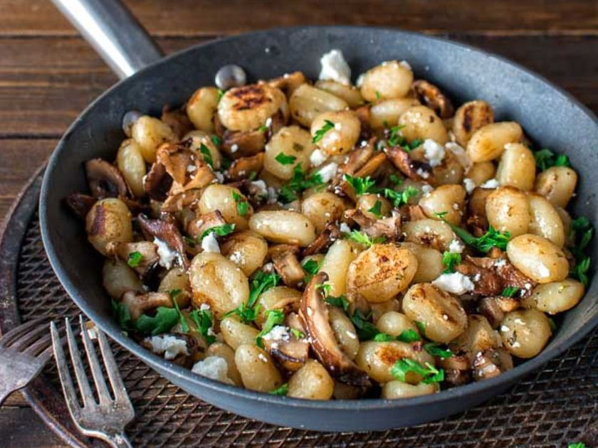

Cuprins
Gnocchi cu ciuperci
Ingrediente
Mod de preparare
Rezultat final

Gnocchi cu ciuperci
Gnocchi (singular gnocco – lb italiană) este denumirea generică a unui tip de găluște mici, preparate din cartofi, făină de grâu, griș sau pesmet.
Sunt folosite pe scară largă în bucătăria italiană dar și în multe țări din Europa și America.
Ingrediente
Pentru gnocchi:
4 cartofi
1 ou
cca 150 gr faina
3 catei usturoi
sare
Pentru ciuperci:
200 gr ciuperci
2 catei de usturoi
1 varfcimbru
1 varftarhon
1 varfsare
1 varfpiper
1 linguritaulei de masline
Mod de preparare
Cartofii cu tot cu coaja se coc in cuptor pe un pat de sare groasa(ii puteti pune in tava si fara sare) cca 45 de minute sau pana se inmoaie bine. Alaturi am pus si 3 catei de usturoi, cu tot cu coaja, dar i-am scos mai devreme din cuptor.
Cat inca sunt fierbinti, cartofii se taie in jumatati si se trec prin sita(se presioneaza fiecare jumatate prin sita fina) pentru a obtine un piure foarte fin. La fel facem si cu usturoiul copt. Adaugam sare peste piure si oul batut dar nu tot oul, cam jumatate si amestecam bine.
Pe masa de lucru punem jumatate din faina, peste ea piureul apoi restul de faina si incepem sa amestecam pana se omogenizeaza. Se amesteca usor si nu se framanta ca pe aluatul de paine. Acest aluat se imparte in doua bucati egale iar din fiecare bucata se intinde cate un sul cu diamentrul de cca 1 cm apoi le taiem in bucatele de 2 cm.
Punem pe foc o oala cu apa suficienta si putina sare iar cand da in clocot punem gnocchi. Sunt gata in 2 minute sau cand se ridica la suprafata. Ii scoatem si ii calim in putin ulei de masline pana capata culoare, apoi se dau deoparte pana pregatim ciupercile.
Intr-o tigaie se pun 3-4 linguri de ulei de masline si ciupercile. Se calesc putin pana se inmoaie, apoi se adauga usturoiul maruntit, sare, piper, cimbru si tarhon si se mai calesc 3-4 minute. Adaugam si gnocchi rumeniti, amestecam bine si e gata de servit!
Rezultat final
Strong
1Cartofii galbeni sunt mai buni pentru a face gnocchi.
2 Infunctie de calitatea cartofilor, s-ar putea sa aveti nevoie de mai multa sau mai putina faina.